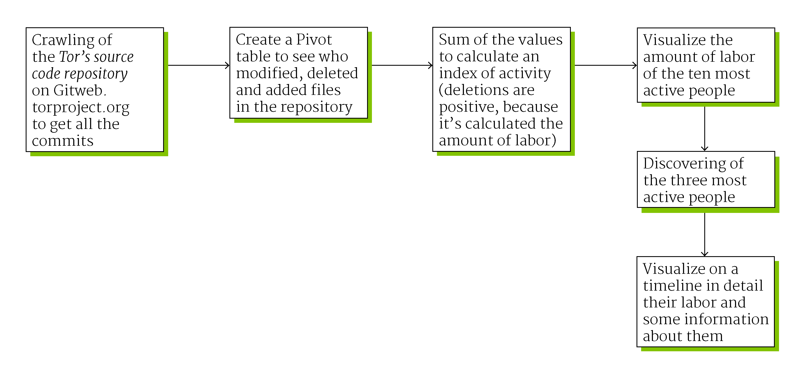

First step
We have used an internet crawler to download from https://gitweb.torproject.org/ every commit
has been done in the Tor repository (the main repository, where the browser code is built):
who made the commit, when and how many files he or she has added, deleted or modified.
We have made clusters of same day commits (at first they were divided by minute)
After this, we have analyzed the data using Microsoft Excel searching the most productive
coder (an Index of Activity has been created by the sum of files modified, added or deleted
in a single day).
Then, having seen the first 3 people had made a lot more code than every other one, we have
visualized their Index of Activity in a timeline, looking for possible spikes of
productivity. After this we have seen the comments on the spike of productivity day looking
for the cause of the spike of productivity.
